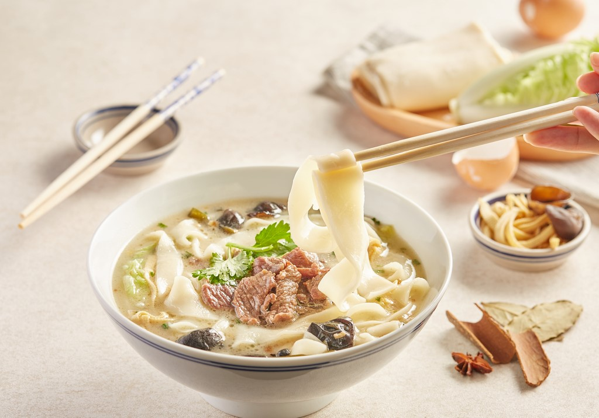
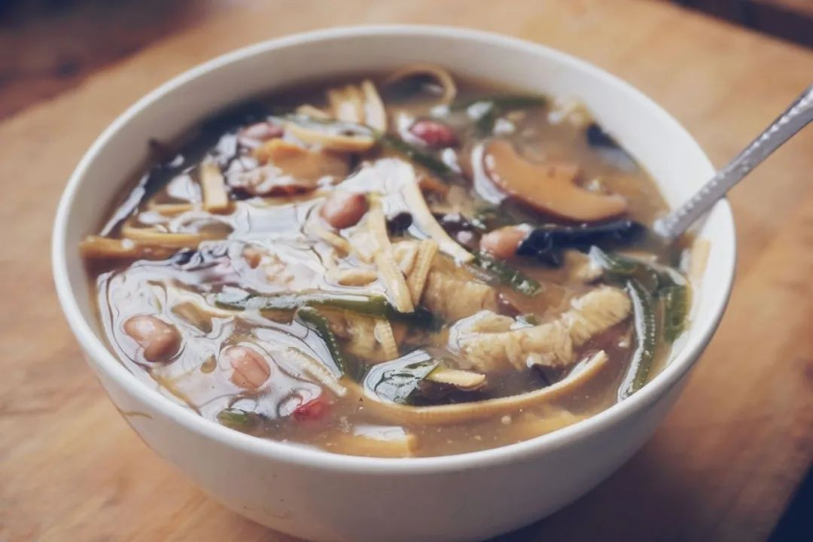
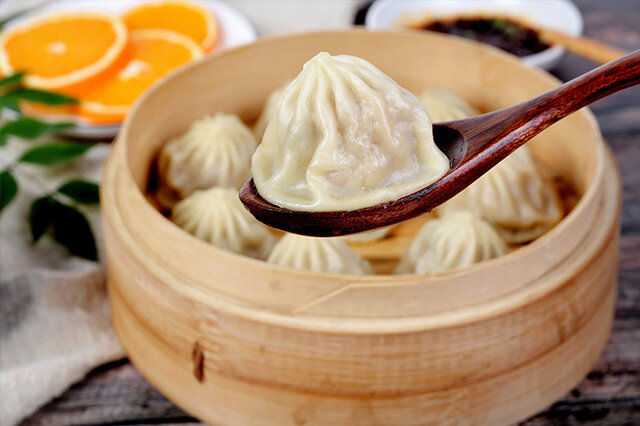

羊肉烩面：
合记羊肉烩面是一种荤、素、汤、菜、饭兼而有之的传统风味小吃，以味道鲜美，经济实惠，享誉中原。94年5月荣获“全中清真名牌风味食品”称号。97年12月又摘取“中华名小吃”桂冠。合记的前身是老乡亲饭店。1953年李少卿等4人接营，因是合伙经营，易名合记饭店。1967年起专门经营羊肉烩面，改名为“合记烩面馆”，俗称合记
胡辣汤：
胡辣汤是周口特色食品。它源于宋代中叶，大兴于民国初年，之后花样不断翻新。至 今你若行走在周口大街小巷口，随处都能见到它的身影。小小一碗胡辣汤，缘何会历久不衰呢，它以大众化的品位和低廉的价格，始终成为人们早餐时的首选。
开封灌汤包：
开封灌汤包风味独特，是开封著名食品之一。灌汤包皮薄，洁白如景德镇陶瓷，有透明之感。吃之，内有肉馅，底层有鲜汤。开封人吃灌汤包子有这样一句顺口溜“先开窗，后喝汤，再满口香"。
